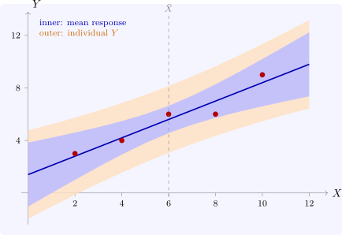

2.5 Prediction
Given a new value \(X_0\), the regression predicts \(\hat Y_0 = a + bX_0\). Two different questions can be asked about the accuracy of this prediction, and they have different answers.
- (i)
- How accurately does \(\hat Y_0\) estimate the mean response \(E(Y_0) = \alpha + \beta X_0\)? This is the question a policy-maker asks: what is average food spending at an income of K7 000?
- (ii)
- How accurately does \(\hat Y_0\) predict an individual value \(Y_0 = \alpha + \beta X_0 + u_0\)? This is the question asked about one particular household.
Theorem 2.5.1. Let \(u_0\) be uncorrelated with \(u_1, \dots , u_n\), with mean \(0\) and variance \(\sigma ^2\). Then under (A1)–(A4), \begin {align*} \Var \bigl (\hat Y_0 - E(Y_0)\bigr ) &= \sigma ^2\left (\frac 1n + \frac {(X_0 - \bar X)^2}{\sum x_i^2}\right ),\\ \Var (Y_0 - \hat Y_0) &= \sigma ^2\left (1 + \frac 1n + \frac {(X_0 - \bar X)^2}{\sum x_i^2}\right ). \end {align*}
Proof. From the proof of Theorem 2.3.2, \(a - \alpha = \bar u - (b - \beta )\bar X\), so \[ \hat Y_0 - E(Y_0) = (a - \alpha ) + (b - \beta )X_0 = \bar u + (b - \beta )(X_0 - \bar X) . \] Since \(\Cov (\bar u, b) = 0\), its variance is \(\sigma ^2/n + (X_0 - \bar X)^2\sigma ^2/\sum x_i^2\). The prediction error for an individual is \(e_0 = Y_0 - \hat Y_0 = u_0 - \bigl (\hat Y_0 - E(Y_0)\bigr )\). The new disturbance \(u_0\) is uncorrelated with the sample, and so with \(a\) and \(b\), which adds \(\sigma ^2\) to the variance. □
Both variances are smallest at \(X_0 = \bar X\) and grow quadratically away from it: predictions are least reliable far from the bulk of the data, and extrapolation beyond the observed range is the least reliable of all. The extra \(\sigma ^2\) in the second formula does not shrink as the sample grows. However well the line is estimated, an individual household’s spending still varies about it. Under (A5) the intervals are \begin {align*} \text {mean:}\quad & \hat Y_0 \pm t_{\alpha /2}\, s\sqrt {\frac 1n + \frac {(X_0 - \bar X)^2}{\sum x_i^2}} ,\\ \text {individual:}\quad & \hat Y_0 \pm t_{\alpha /2}\, s\sqrt {1 + \frac 1n + \frac {(X_0 - \bar X)^2}{\sum x_i^2}} . \end {align*}
Example 2.5.2. In Example 2.2.5, at \(X_0 = 7\), \(\hat Y_0 = 1.4 + 0.7(7) = 6.3\) and \((X_0 - \bar X)^2/\sum x_i^2 = 1/40\). With \(s = 0.7303\), \begin {align*} \text {mean:}\quad & 6.3 \pm 3.182(0.7303)\sqrt {0.2 + 0.025} = 6.3 \pm 1.102 = (5.20,\ 7.40),\\ \text {individual:}\quad & 6.3 \pm 3.182(0.7303)\sqrt {1.225} = 6.3 \pm 2.572 = (3.73,\ 8.87) . \end {align*}
Figure 4 draws both bands over the whole range. The inner band is the uncertainty about the line, and the outer band adds the scatter of individual households about it.

Questions on this section
Stuck on something here? Ask below and it stays attached to this topic.